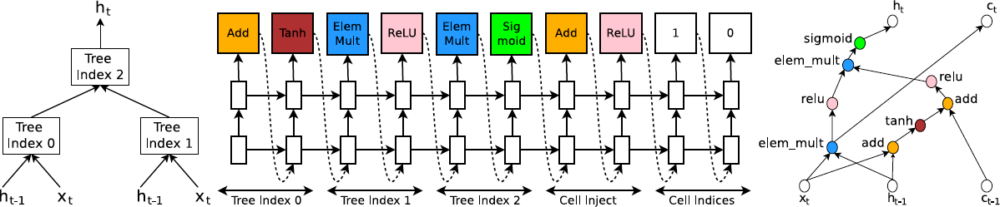
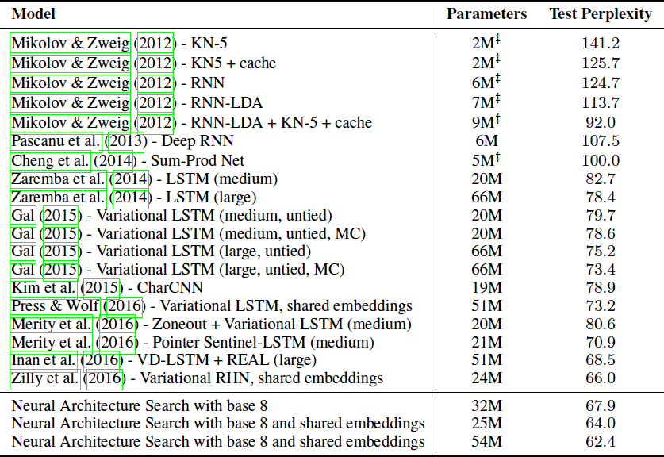

NAS
(ICLR 2017) Neural Architecture Search with Reinforcement Learning
Paper: https://arxiv.org/abs/1611.01578
Page: https://ai.googleblog.com/2017/05/using-machine-learning-to-explore.html
我们使用循环网络生成神经网络的模型描述，并使用强化学习训练此 RNN，以最大化生成的体系结构在验证集上的预期准确率。
we use a recurrent network to generate the model descriptions of neural networks and train this RNN with reinforcement learning to maximize the expected accuracy of the generated architectures on a validation set.
中文
简介
本文介绍了神经网络搜索，这是一种基于梯度的方法，用于寻找良好的架构（参见图1）。

图 1：神经网络搜索概览
我们的工作基于以下观察：神经网络的结构和连通性通常可以由可变长度的字符串指定。因此可以使用循环网络，即控制器，来生成这样的字符串。
训练由字符串指定的网络，即“子网络”，在真实数据上得到验证集的准确率。使用此准确率作为奖励信号，我们可以计算策略梯度以更新控制器。因此，在下一次迭代中，控制器将为具有高精度的架构提供更高的概率。
相关工作
方法
用循环神经网络控制器生成模型描述

图2：我们的控制器递归神经网络如何对简单的卷积网络进行采样。它预测一层滤波器高度、滤波器宽度、步幅高度、步幅宽度以及重复的滤波器数量。每个预测都由softmax分类器执行，然后作为输入馈入下一个时间步。
如果层数超过某个值，则生成架构的过程停止。
使用强化训练
控制器预测的 token 列表可以被视为一个动作列表 \(a_{1:T}\) 来设计子网络的体系结构。
收敛时，这个子网络将在不变的数据集上得到准确率 \(R\)。我们可以使用此精度 \(R\) 作为奖励信号，并使用强化学习来训练控制器。
更具体地说，为了找到最佳架构，我们要求我们的控制器最大化其预期奖励，由 \(J(\theta_c)\) 表示：
\[J(\theta_c) = E_{P(a_{1:T};\theta_c)} [R]\]
由于奖励信号R是不可微分的，我们需要使用 策略梯度 方法来迭代更新 \(\theta_c\)。我们使用 Williams（1992）的 REINFORCE 规则：
\[\nabla_{\theta_c} J(\theta_c) = \sum_{t = 1}^T E_{P(a_{1:T};\theta_c)} [\nabla_{\theta_c} \log P(a_t \mid a_{(t - 1):1};\theta_c) R]\]
使用跳过连接和其他层类型来增加体系结构的复杂性
为了使控制器能够预测像 GoogleNet 和 ResNet 这种连接，我们使用了基于注意机制的集合选择型注意。
在 \(N\) 层，我们添加一个锚点，其中包含 \(N - 1\) 个基于内容的 sigmoids，用于指示需要连接的先前层。 每个 sigmoid 是控制器的当前隐藏状态和先前 \(N - 1\) 个锚点的先前隐藏状态的函数：
\[P(\text{Layer j is an input to layer i}) = \text{sigmoid}(v^T \tanh(W_{prev} * h_j + W_{curr} * h_i))\]
训练参数：\(W_{prev}\), \(W_{curr}\), \(v\)
图4：控制器使用锚点和集合选择注意力来形成跳过连接。
跳过连接可能导致“编译失败”，其中一个层与另一个层不兼容，或者一个层可能没有任何输入或输出。为了避免这些问题，我们采用了三种简单的技术：
如果某层未连接到任何输入图层，则将图像作为输入层。
在最后一层，我们获取所有尚未连接的图层输出，并在将此最终隐藏状态发送给分类器之前将它们连接起来。
如果要连接的输入层具有不同的大小，我们用零填充小层，以便连接的层具有相同的大小。
生成循环单元结构
在第 \(t\) 步，控制器需要找到 \(h_t\) 的函数形式，它将 \(x_t\) 和 \(h_{t-1}\) 作为输入。最简单的方法是 \(h_t = \tanh(W_1 * x_t + W_2 * h_{t-1})\)
基本 RNN 和 LSTM 单元的计算可以概括为由多个步骤构成的树，其中 \(x_t\) 和 \(h_{t-1}\) 作为输入并产生 \(h_t\) 作为最终输出。

图5：从具有两个叶节点（基数2）和一个内部节点的树构造一个循环单元的示例。
左：定义由控制器预测的计算步骤的树。
中心：控制器为树中的每个计算步骤做出的一组示例预测。
右：从控制器的示例预测构造的循环单元的计算图。
实验和结果
在 CIFAR-10 上，我们的目标是找到一个好的卷积结构，而在 Penn Treebank，我们的目标是找到一个好的循环单元。
为 CIFAR-10 学习卷积结构
搜索空间：我们的搜索空间包括卷积、ReLU、Batch Normalization 和层间连接。对于每个卷积层，控制器 RNN 必须在 [1, 3, 5, 7] 中选择滤波器高度，在 [1, 3, 5, 7] 中选择滤波器宽度，并在 [24, 36, 48, 64] 中选择滤波器数量。对于步幅，我们执行两组实验，一组用于将步幅固定为 1，另一组用控制器在 [1, 2, 3] 中预测步幅。
训练细节：控制器 RNN 是一个双层 LSTM，每层有 35 个隐藏单元。
结果：在控制器训练 12,800 个架构后，我们发现该架构可以获得最佳的验证精度。然后，我们对学习率、体重衰减、batchnorm epsilon 以及衰减的 epoch 进行小网格搜索。
表1：神经架构搜索和其他最先进的模型在 CIFAR-10 上的性能。
为 Penn Treebank 学习循环单元
搜索空间：对于树中的每个节点，控制器 RNN 需要在 [add; elem mult] 中选择组合方法，在 [identity; tanh; sigmoid; relu] 中选择激活方法。
训练细节: 该控制器及其训练与 CIFAR-10 实验基本相同，只是作了一些修改。

表 2：Penn Treebank 语言建模任务测试集的单模型效果。
结论
本文介绍了神经网络结构搜索，一种利用循环神经网络构造神经网络结构的方法。
English
Introduction
This paper presents Neural Architecture Search, a gradient-based method for finding good architectures (see Figure 1).
Figure 1: An overview of Neural Architecture Search.
Our work is based on the observation that the structure and connectivity of a neural network can be typically specified by a variable-length string. It is therefore possible to use a recurrent network – the controller – to generate such string.
Training the network specified by the string – the “child network” – on the real data will result in an accuracy on a validation set. Using this accuracy as the reward signal, we can compute the policy gradient to update the controller. As a result, in the next iteration, the controller will give higher probabilities to architectures that receive high accuracies.
Related Work
Methods
Generate Model Descriptions with a Controller Recurrent Neural Network
Figure 2: How our controller recurrent neural network samples a simple convolutional network. It predicts filter height, filter width, stride height, stride width, and number of filters for one layer and repeats. Every prediction is carried out by a softmax classifier and then fed into the next time step as input.
the process of generating an architecture stops if the number of layers exceeds a certain value.
Training with Reinforce
The list of tokens that the controller predicts can be viewed as a list of actions \(a_{1:T}\) to design an architecture for a child network.
At convergence, this child network will achieve an accuracy \(R\) on a held-out dataset. We can use this accuracy \(R\) as the reward signal and use reinforcement learning to train the controller.
More concretely, to find the optimal architecture, we ask our controller to maximize its expected reward, represented by \(J(\theta_c)\):
\[J(\theta_c) = E_{P(a_{1:T};\theta_c)} [R]\]
Since the reward signal R is non-differentiable, we need to use a policy gradient method to iteratively update \(\theta_c\). In this work, we use the REINFORCE rule from Williams (1992):
\[\nabla_{\theta_c} J(\theta_c) = \sum_{t = 1}^T E_{P(a_{1:T};\theta_c)} [\nabla_{\theta_c} \log P(a_t \mid a_{(t - 1):1};\theta_c) R]\]
Increase Architecture Complexity with Skip Connections and Other Layer Types
To enable the controller to predict such connections, we use a set-selection type attention which was built upon the attention mechanism.
At layer \(N\), we add an anchor point which has \(N - 1\) content-based sigmoids to indicate the previous layers that need to be connected. Each sigmoid is a function of the current hiddenstate of the controller and the previous hiddenstates of the previous \(N - 1\) anchor points:
\[P(\text{Layer j is an input to layer i}) = \text{sigmoid}(v^T \tanh(W_{prev} * h_j + W_{curr} * h_i))\]
trainable parameters: \(W_{prev}\), \(W_{curr}\), \(v\)
Figure 4: The controller uses anchor points, and set-selection attention to form skip connections.
Skip connections can cause “compilation failures” where one layer is not compatible with another layer, or one layer may not have any input or output. To circumvent these issues, we employ three simple techniques.
if a layer is not connected to any input layer then the image is used as the input layer.
at the final layer we take all layer outputs that have not been connected and concatenate them before sending this final hiddenstate to the classifier.
if input layers to be concatenated have different sizes, we pad the small layers with zeros so that the concatenated layers have the same sizes.
Generate Recurrent Cell Architectures
At every time step \(t\), the controller needs to find a functional form for \(h_t\) that takes \(x_t\) and \(h_{t-1}\) as inputs. The simplest way is to have \(h_t = \tanh(W_1 * x_t + W_2 * h_{t-1})\)
The computations for basic RNN and LSTM cells can be generalized as a tree of steps that take \(x_t\) and \(h_{t-1}\) as inputs and produce \(h_t\) as final output.
Figure 5: An example of a recurrent cell constructed from a tree that has two leaf nodes (base 2) and one internal node.
Left: the tree that defines the computation steps to be predicted by controller.
Center: an example set of predictions made by the controller for each computation step in the tree.
Right: the computation graph of the recurrent cell constructed from example predictions of the controller.
according to the predictions of the controller RNN in this example, the following computation steps will occur:
The controller predicts Add and Tanh for tree index 0, this means we need to compute \(a_0 = tanh(W_1 * x_t + W_2 * h_{t-1})\).
The controller predicts ElemMult and ReLU for tree index 1, this means we need to compute \(a_1 = \text{ReLU} ((W_3 * x_t) \odot (W_4 * h_{t-1}))\).
The controller predicts 0 for the second element of the “Cell Index”, Add and ReLU for elements in “Cell Inject”, which means we need to compute \(a^{new}_0 = \text{ReLU}(a_0 + c_{t-1})\). Notice that we don’t have any learnable parameters for the internal nodes of the tree.
The controller predicts ElemMult and Sigmoid for tree index 2, this means we need to compute \(a_2 = \text{sigmoid}(a^{new}_0 \odot a_1)\). Since the maximum index in the tree is 2, \(h_t\) is set to \(a_2\).
The controller RNN predicts 1 for the first element of the “Cell Index”, this means that we should set \(c_t\) to the output of the tree at index 1 before the activation, i.e., \(c_t = (W_3 * x_t) \odot (W_4 * h_{t-1})\).
Experiments and Results
On CIFAR-10, our goal is to find a good convolutional architecture whereas on Penn Treebank our goal is to find a good recurrent cell.
Learning Convolutional Architectures for CIFAR-10
Search space: Our search space consists of convolutional architectures, with rectified linear units as non-linearities (Nair & Hinton, 2010), batch normalization (Ioffe & Szegedy, 2015) and skip connections between layers (Section 3.3). For every convolutional layer, the controller RNN has to select a filter height in [1, 3, 5, 7], a filter width in [1, 3, 5, 7], and a number of filters in [24, 36, 48, 64]. For strides, we perform two sets of experiments, one where we fix the strides to be 1, and one where we allow the controller to predict the strides in [1, 2, 3].
Training details: The controller RNN is a two-layer LSTM with 35 hidden units on each layer. It is trained with the ADAM optimizer (Kingma & Ba, 2015) with a learning rate of 0.0006. The weights of the controller are initialized uniformly between -0.08 and 0.08. For the distributed training, we set the number of parameter server shards S to 20, the number of controller replicas K to 100 and the number of child replicas m to 8, which means there are 800 networks being trained on 800 GPUs concurrently at any time.
Once the controller RNN samples an architecture, a child model is constructed and trained for 50 epochs. The reward used for updating the controller is the maximum validation accuracy of the last 5 epochs cubed. The validation set has 5,000 examples randomly sampled from the training set, the remaining 45,000 examples are used for training. The settings for training the CIFAR-10 child models are the same with those used in Huang et al. (2016a). We use the Momentum Optimizer with a learning rate of 0.1, weight decay of 1e-4, momentum of 0.9 and used Nesterov Momentum (Sutskever et al., 2013).
During the training of the controller, we use a schedule of increasing number of layers in the child networks as training progresses. On CIFAR-10, we ask the controller to increase the depth by 2 for the child models every 1,600 samples, starting at 6 layers.
Results: After the controller trains 12,800 architectures, we find the architecture that achieves the best validation accuracy. We then run a small grid search over learning rate, weight decay, batchnorm epsilon and what epoch to decay the learning rate.
Table 1: Performance of Neural Architecture Search and other state-of-the-art models on CIFAR-10.
Learning Recurrent Cells for Penn Treebank
Search space: For each node in the tree, the controller RNN needs to select a combination method in [add; elem mult] and an activation method in [identity; tanh; sigmoid; relu]. The number of input pairs to the RNN cell is called the “base number” and set to 8 in our experiments. When the base number is 8, the search space is has approximately \(6 \times 10^{16}\) architectures, which is much larger than 15,000, the number of architectures that we allow our controller to evaluate.
Training details: The controller and its training are almost identical to the CIFAR-10 experiments except for a few modifications: 1) the learning rate for the controller RNN is 0.0005, slightly smaller than that of the controller RNN in CIFAR-10, 2) in the distributed training, we set S to 20, K to 400 and m to 1, which means there are 400 networks being trained on 400 CPUs concurrently at any time, 3) during asynchronous training we only do parameter updates to the parameter-server once 10 gradients from replicas have been accumulated.
In our experiments, every child model is constructed and trained for 35 epochs.
Table 2: Single model perplexity on the test set of the Penn Treebank language modeling task. Parameter numbers with z are estimates with reference to Merity et al. (2016).
Conclusion
In this paper we introduce Neural Architecture Search, an idea of using a recurrent neural network to compose neural network architectures.